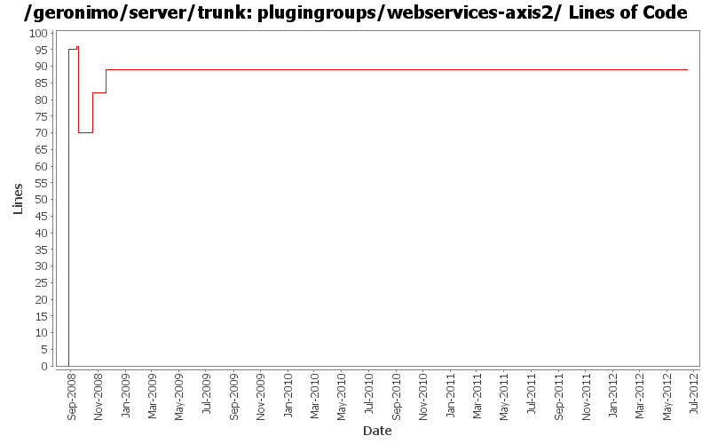

[root]/plugingroups/webservices-axis2
 src
(0 files, 0 lines)
src
(0 files, 0 lines)
 main
(0 files, 0 lines)
main
(0 files, 0 lines)
 history
(1 files, 29 lines)
history
(1 files, 29 lines)
 plan
(0 files, 0 lines)
plan
(0 files, 0 lines)

| Author | Changes | Lines of Code | Lines per Change |
|---|---|---|---|
| Totals | 19 (100.0%) | 171 (100.0%) | 9.0 |
| linsun | 4 (21.1%) | 109 (63.7%) | 27.2 |
| djencks | 4 (21.1%) | 31 (18.1%) | 7.7 |
| xuhaihong | 3 (15.8%) | 13 (7.6%) | 4.3 |
| gawor | 3 (15.8%) | 8 (4.7%) | 2.6 |
| genspring | 1 (5.3%) | 6 (3.5%) | 6.0 |
| rickmcguire | 3 (15.8%) | 3 (1.8%) | 1.0 |
| xiaming | 1 (5.3%) | 1 (0.6%) | 1.0 |
Update trunk version to 4.0.0-SNAPSHOT
1 lines of code changed in 1 file:
Package axis2-ejb-deployer in the assembly
6 lines of code changed in 1 file:
Remove an extra left bracket
1 lines of code changed in 1 file:
a. Enable POJO web service class enhancement on the runtime for Tomcat assembly
b. Disable web service deployer in UDDI module temporarily
6 lines of code changed in 1 file:
[maven-release-plugin] prepare release 3.0-M2
1 lines of code changed in 1 file:
[maven-release-plugin] prepare branch 3.0-M2
1 lines of code changed in 1 file:
GERONIMO-5005 Enable JAXR GBean.
6 lines of code changed in 1 file:
More osgi work on the axis plugins
1 lines of code changed in 1 file:
GERONIMO-5290 fix many of the deprecation warnings from maven 3
5 lines of code changed in 1 file:
build plugin groups, but trim them to what is available
24 lines of code changed in 1 file:
GERONIMO-4655 upgrade version to 3.0-SNAPSHOT, make a few things more consistent
1 lines of code changed in 1 file:
GERONIMO-4432 Allow users to filter plugins by category and name columns when selecting assembly list
1 lines of code changed in 1 file:
mostly working plugin that uses CXF tooling to generate WSDL and other artifacts for JAX-WS services (GERONIMO-4351)
7 lines of code changed in 1 file:
GERONIMO-4363 Update plugin group's metadata (especially category) to represent function of a plugin group
12 lines of code changed in 1 file:
refactor wsgen functionality into a separate plugin (part of GERONIMO-4351)
1 lines of code changed in 1 file:
some modification to the javaee5 plugin groups and some format changes
1 lines of code changed in 1 file:
clean up plugingroup poms a bit and fix so the the geronimo-plugin.xml have the right info
0 lines of code changed in 1 file:
GERONIMO-4300 allow c-m-p to generate plugins with no classloader, dependending on absence of plan
1 lines of code changed in 1 file:
part of GERONIMO-4265 - add a few other plugin groups and include them to the jetty/tomcat assembly
95 lines of code changed in 1 file: